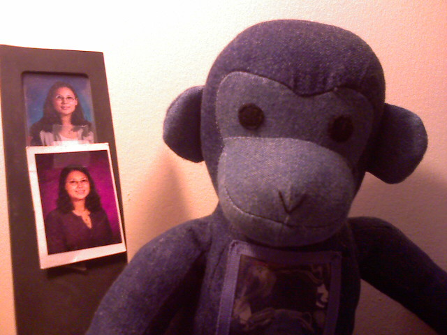

Garden Pot House

Spotted this in a plant pot on my walk home from work. It was built by the Foggy Bottom Garden Club.

Spotted this in a plant pot on my walk home from work. It was built by the Foggy Bottom Garden Club.

Waiting in a parking lot that is below an embankment as a Hummer drives by. I thought the composition was neat.
My girlfriend was driving down the highway when she spotted a bright car with question marks all over it. As she passed by she whipped out her cell phone and snapped this photo.

For those unfamiliar it is Matthew Lesko, the question mark guy who is seen in TV commercials yelling about free money programs from the government. Check the YouTube clip below.

It rained last night leaving a nice dew on the spider webs outside of my apartment. It also cooled off a bit. Sweltering October days are not my cup of tea.

Sitting in traffic just like everyone else. Except this car did look better than the rest of the other cars.


On Saturday night, the Giant by Kristina’s apartment is a ghost town. Sundays and Mondays are usually mad houses.

Pass this everyday on my way home and the lighting caught my eye this afternoon.

Every morning Puck gets to fall asleep on the dining room table after I eat my breakfast.

Just some little trinkets I keep on my desk at home. The pictures are high school yearbook photos and the stuffed monkey actually has a wallet-sized photo holder (though you can’t see it).
What do you keep on your desk?